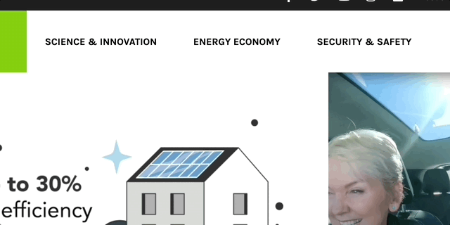
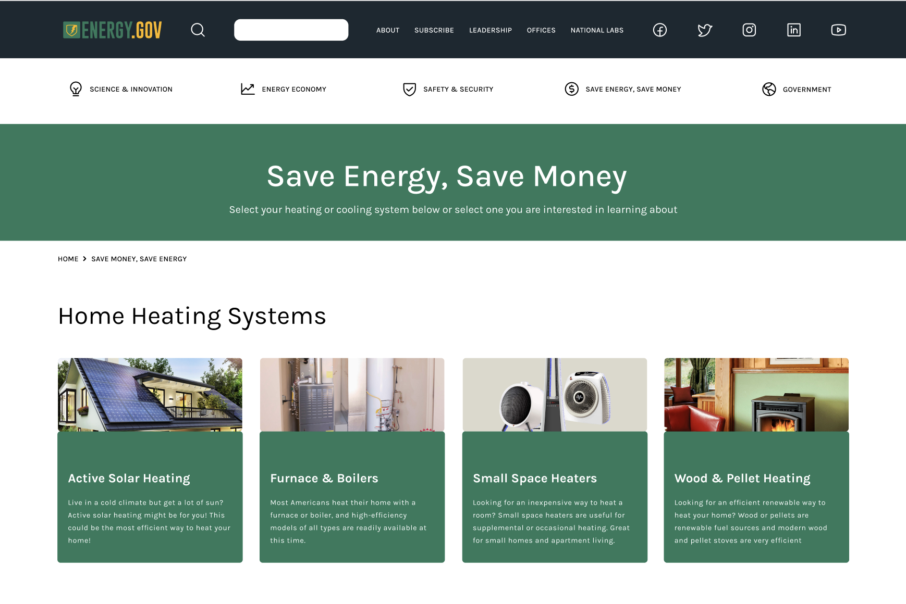

Usability Tests
We created a few tasks for users to complete, then found some friends and family to test how well they could navigate the original website

Hueristic Evaluation
To further analyze the webpage, we completed a full analysis that discussed readibilty, content organization, use of space, use of imagery and much more.

Feature Prioritization
After our research, we started to compile all of our ideas and figure what changes were most important with balancing how much we can complete in the short three weeks we had to complete the case study.